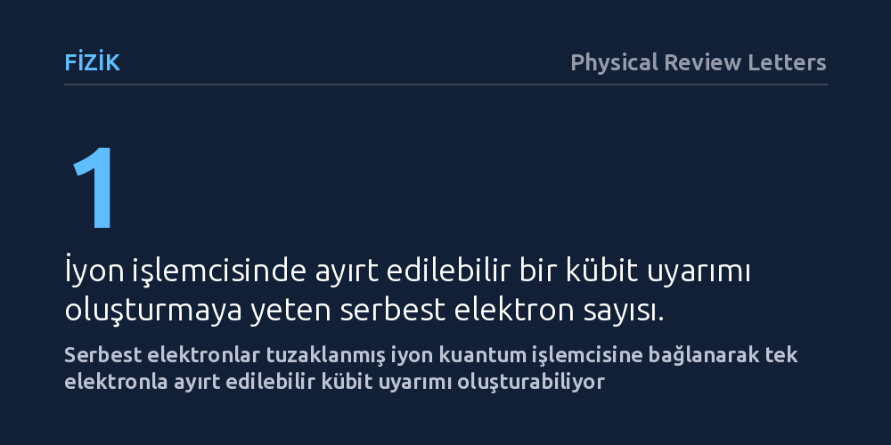

FIZIK · Physical Review Letters · 2026-10-11
Araştırmacılar, elektron mikroskobundaki serbest elektronların tuzaklanmış iyon kuantum işlemcisine eşevreli biçimde bağlanıp bağlanamayacağını teorik olarak inceledi. Yapılan analizler, tek bir serbest elektronun iyon kübitlerinde ayırt edilebilir uyarımlar oluşturabildiğini ve numuneye zarar vermeyen görüntülemenin yolunu açtığını gösterdi.
Elektron mikroskobunu kuantum işlemcisiyle eşleştirerek, hassas biyolojik molekülleri yoğun radyasyonla tahrip etmeden atomik düzeyde görüntülemenin teorik temelini kuruyor.

Klasik elektron mikroskopları, nanometre ve atom altı ölçekteki yapıları aydınlatmada modern bilimin en güçlü araçları arasında yer alıyor. Ancak bu cihazların çalışma mekanizması, incelenen hedefin üzerine çok yoğun bir elektron bombardımanı yöneltmeye dayanıyor. Biyolojik proteinler, hücre yapıları veya hassas kuantum malzemeler söz konusu olduğunda, bu yüksek radyasyon dozu örneğin doğal yapısını saniyeler içinde geri dönülmez biçimde tahrip edebiliyor.
Bilim dünyası uzun süredir numuneye zarar vermeden net görüntü elde etmenin, yani elektron dozunu en aza indirip her bir parçacıktan azami bilgiyi çıkarmanın yollarını arıyor. Kuantum fiziğinin eşevrelilik kuralları, mikroskop içinden geçen elektronların harici bir kuantum sistemiyle etkileşime sokulması halinde bilginin numuneyi yok etmeden toplanabileceğini öngörüyor. Araştırmacılar tam olarak bu fikrin peşine düşerek serbest elektronları kararlı bir kuantum işlemcisine bağlamanın mümkün olup olmadığını sorguladı.
Araştırma ekibi, sorunun çözümü için elektron mikroskobu kolonunu bir iyon tuzağı kuantum işlemcisiyle doğrudan birleştiren hibrit bir mimari önerdi. Tuzaklanmış iyon kuantum bilgisayarları, elektromanyetik alanlar içinde asılı tutulan tekil yüklü atomların lazerlerle hassas biçimde kontrol edilmesine dayanıyor ve kuantum durumlarını son derece uzun süre koruyabilmeleriyle tanınıyor.
Yapılan teorik çalışmada, mikroskop tüpünde serbestçe ilerleyen elektron dalga paketlerinin tuzaktaki iyonların yakınından geçerken oluşturacağı elektrostatik bağlaşım adım adım modellendi. Fizikçiler, elektronların enerjisi, geçiş geometrisi ve tuzak parametrelerini hesaba katarak kuantum eşevreliliğinin çevresel gürültüye rağmen korunup korunamayacağını analitik yöntemlerle inceledi.
Modellemenin ortaya koyduğu en kritik bulgu, tek bir serbest elektronun geçişinin dahi tuzaklanmış iyon üzerinde net ve ayırt edilebilir bir kübit uyarımı meydana getirebilmesi oldu. Standart mikroskoplarda elektronlar bir algılayıcıya çarpıp soğurularak veya saçılarak tespit edilir ve bu süreçte kuantum özellikleri yok olur. Önerilen düzende ise elektron iyona kuantum düzeyinde enerji aktararak durumunu değiştiriyor ve parçacık tahrip olmadan yoluna devam edebiliyor.
Sistemin bir diğer üstünlüğü, peş peşe geçen çok sayıda elektrondan gelen zayıf etkileşimlerin iyon işlemcisi üzerinde biriktirilebilmesi. Böylece örnekten saçılan elektronların taşıdığı faz bilgisi kuantum belleğinde toplanarak geleneksel dedektörlerin kaçırdığı en küçük sinyaller bile gürültüden arındırılmış biçimde okunabiliyor.
Bu teorik bulgu, 'kuantum destekli ve doz verimli elektron mikroskopisi' alanında pratik uygulamalara kapı açıyor. Yaklaşım hayata geçirilebilirse, biyolojik makromoleküller ve ışığa duyarlı kristaller neredeyse hiç radyasyon hasarına uğramadan atomik çözünürlükle haritalanabilecek.
Bunun da ötesinde çalışma, serbest elektronlar ile bağlı kuantum durumları arasında doğrudan bir köprü kuruyor. Elektron mikroskoplarının uzaysal hassasiyeti ile kuantum bilgisayarlarının bilgi işleme kapasitesini bir araya getiren bu yöntem, yeni nesil kuantum algılayıcılar ve dağıtık kuantum ağları için de güçlü bir platform vadediyor.